Overview
The goal of our trainings is to learn the building blocks of privacy protection and digital security. Our teachings focus on activities patrons do every day at the library so that library staff can develop the capacity to:
- identify how patrons’ data travels to and through library networks;
- assess which privacy and security risks patrons are most likely to encounter at the library; and,
- respond with appropriate steps that help patrons protect themselves against unnecessary data collection or unwanted access and use of data they share online.
By beginning with common patron experiences, the Data Privacy Project makes learning about privacy protections relevant to the everyday realities of libraries today.
How much do you and your patrons know about libraries and privacy?
Let’s take a quiz.
True or false: When you use a library terminal, the library knows what sites you have visited.
TrueFalse
True. The library network can see which sites library terminals or computer devices on the library network are communicating with. If you are using HTTP, library network operators can see the information you send and receive; if you are using HTTPS, network operators can only see which sites you visit and not the content. Library policies will vary from institution to institution. Check with your library to see how long it retains this data.
Who is most likely to steal your password and access your accounts?
ParentsSpouseSiblingClassmateThiefAnother patron
Any of these people may try to obtain or guess your password without your consent. A strong password should be hard to guess by someone who knows you (so, it shouldn’t include easily known information like your name or address or pet’s name).nd, it should be hard to guess by computer programs that digital thieves might use (password should be as long as possible and include an assortment of capital letters, symbols and numbers).
True or false: During a web browsing session in private or incognito mode, cookies cannot communicate information about your browsing behavior to third parties.
TrueFalse
False. Although your dad or wife might not be able to see what sites you’ve visited on you computer, your Internet provider, websites you’re visiting, and third parties embedded in those sites can see who you are. The requests your computer or computer device makes to a website will include your computer’s Internet Protocol (IP) address. Cookies on websites include cookies used by the website itself and third party cookies like those used by ad networks. These cookies are invisible to the common user even though they will also communicate with your computer and know you by your IP address. Because they know your IP address, they can track your behavior across any site where they can send cookies. The only way to hide your IP address from the third parties and websites is by using a virtual private network (VPN), which will cloak any requests, or by using the Tor browser. Note that when using a VPN, that company or VPN provider will know what sites you are visiting. All in all, private browsing simply hides your usage history from other users on your computer.
True or false: Using a public library’s open wi-fi means your online behavior is anonymous.
TrueFalse
False. Websites that can see your computer’s IP address, websites that you log on to with a username and password, and apps that you have turned on your phone will be able to identify you. Additionally, the Internet Service Provider (ISP) that supplies connectivity to the library will be able to identify the IP address affiliated with unsecured HTTP requests made by a library computer terminal or your computer device on the library network. ISPs will have their own data retention policies. Library network operators will be able to identify who logs on to the library network using the computer reservation system, though check with your library’s computer usage policies to find out how long your library retains that information.
True or false: When a website has a privacy policy, it means the site will not share my information with other websites and companies without my permission.
TrueFalse
False. A privacy policy is a company’s way of communicating to the consumer what kinds of data it collects and the categories or types of third parties with whom the company shares data. A privacy policy will also provide information about its online tracking practices, such as the use of cookies. In other words, if you use a site or app, you’re not setting your privacy terms, you’re agreeing to play by that company’s rules.
True or false: Most websites are encrypted.
TrueFalse
False. A website is encrypted when it has HTTPS in the address bar. Using HTTPS, the content of the website request is encrypted from the server to you. This means that when checking your email using HTTPS, the content of the email invisible only to the email server and to you. However, even when using HTTPS, the webpage’s IP address itself is not encrypted, and so what website you are visiting could be discovered (for example, https://www.signsiampregnant.info). The percentage of HTTPS traffic relative to all web traffic is less than 50 percent, though the precise amount varies from report to report, and the trend is generally increasing. Most email providers, banks, and checkout pages on shopping websites use HTTPS.
True or false: It is safe to use the same password for multiple user accounts, as long as it contains a few different letters, numbers, or symbols.
TrueFalse
False. Using the same password across websites is generally not a good idea, because if one service is compromised or discovered, then all of your accounts are in jeopardy. Instead, if you use a unique password for each account, you minimize the damage if one site is hacked or leaks information.
What is digital hygiene?
When we talk about being safe and secure online and protecting data you care about, we’re referring to digital hygiene. Though we review several steps in our curriculum [link to the pdfs page], here we recommend three basic steps for anyone using a library terminal:
Always use strong passwords. A strong password is something that’s hard to guess by someone who knows you and by a computer. You can use a password manager to both generate and store hard-to-remember passwords for you. You can also test password strength--not your real passwords, but similar kinds of passwords--on password testing sites like this one.

Use sites that are secure (e.g., use HTTPS) for personal transactions. Websites that are encrypted prevent anyone else but you--the sender making the request to visit a particular website--and the website itself from seeing the data traveling between your computer and the website. Many people come to the library because it is the only place they are able to conduct all sorts of very personal business, such as applying to a job, renewing unemployment insurance, and banking online. Any time you have to submit data you care about and don’t want anyone else but the recipient to see, make sure you see the HTTPS or padlock icon in the browser’s address bar.
Log out of a library terminal before walking away. When you are still logged into a terminal and walk away from your session, the person who sits down at the computer next may be able to see your web history, any sites that you are still logged into, and any documents you may have stored in the computer’s temporary drive.
When transmitting data online, what’s a good way to assess risk?
As mentioned above, there are some digital privacy basic hygiene practices we recommend. How do we know what else we should be concerned about? How can we develop our own privacy practices as well as give advice to our library users?
Risks vary from person to person. For example, a Visa card data breach impacts anyone who uses these cards, but a person who does not have a credit card will not need to worry about this. Patrons that use social media need to consider their privacy settings on those sites, as well as the terms of service of those companies. Journalists may need to protect who they contact, in addition to the content of their conversations.
When thinking about patrons, we assess risks based on a few elements:
The patron population is diverse and faces different kinds of threats depending on who they are. What level of digital literacy do they possess? Are they a library terminal user or do they use their own computer device on the library’s wireless network?
Patrons might be concerned about some things over others--for example, their financial transactions, but not their book borrowing history.
Not everyone feels their data is threatened by the same perpetrator. Some patrons might worry about a parent finding out about certain kinds of information, while others might be concerned about a snooping employer or marketing companies. Whether that person or entity is likely to be successful at accessing that information is another important consideration. Patrons might be concerned about their employer, but the likelihood that the company is actually surveilling its employees could be very low.
What you are doing to protect yourself/What we recommend. Some patrons might already be taking steps to protect their privacy. Knowing this is an important step along the way to making recommendations for what more they can do to protect the information they care about from risky people or entities. In general, we want to make recommendations that are most appropriate and considerate of patron’s needs.
Patron 1: Luca
Luca, a single parent with limited digital literacy skills and limited English skills, relies on the library for access to computers and the Internet. Today, she’s using the library to renew her unemployment insurance and food stamps, both of which ask her to provide sensitive information.
Luca's Risks
- Cyberthieves could intercept her information and steal her identity, and siphon benefits away from her.
- Getting her identity back and correcting her records would cost thousands of dollars and many, many hours.
- Because Luca is not very familiar with internet technology, she’s doing little to protect herself.
Step 1
Make sure she’s visiting official unemployment insurance and food stamp websites--as opposed to fake ones--and that these sites are encrypted.
Step 2
She could also take steps to erase her browser history in order to ensure that no cyberthief could access her data by those means.
Step 3
Learning how to create strong passwords is essential to her safety.
Step 4
Finally, we recommend she makes sure to log off of the library computer terminals to ensure no one can access her accounts.
Info to be protected:
- Personal information (e.g. Name, DOB, SSN)
- Children’s personal information
- Financial information
- Location Information
Who is likely to access info against patron’s will?
What patron is doing/should do to keep their info private?
- Browse via HTTPS
- Clear browser history and cookies
- Log off library terminal
- Create strong passwords

Patron 2: Jo
Jo, an artist who regularly comes to the library to do research about strange and sensitive subject matter on both library computers and her own laptop, is currently researching new forms of biowarfare for an upcoming art project. Jo is combing the library catalog for books and electronic resources available through the library, as well as conducting general web research to find out more information on these topics.
Jo's Risks
Because Jo’s project deals with topics that have been associated terrorist activity, the most likely entity interested in accessing their library searches and Web search history are law enforcement and national security agents wishing to protect citizens from terrorists.
Step 1
The likelihood of government officials gaining access is not very high, because Jo is already protecting themself by using Tor, a service that allows users to anonymize http requests.
Step 2
We also recommend that Jo avoid logging into any websites when conducting research to avoid any companies.
Info to be protected:
- Personal information (e.g. Name, DOB, SSN)
- Library usage
- Web search history
- Location Information
Who is likely to access info against patron’s will?
- Government
- Law enforcement
- Corporations
What patron is doing/should do to keep their info private?
- Browse via HTTPS
- Clear browser history and cookies
- Install anti-tracking plug-ins on my browser
- Install anti-malware software
- Log off library terminal
- Use Tor
- Don’t log in to my accounts
- Use an account not in my real name
- Create strong passwords
- Visit legitimate sites/avoid fake sites
- Use a VPN
Patron 3: Sara
Sara is leaving a difficult family situation and uses the library computers and wifi to access social media, look for housing, and read the news.
Sara's Risks
Because things got really bad at home, she is worried that a particular family member will try to track her down and intimidate, bully, or physically harm her. The likelihood of this happening is high: for the past year, the family has depended on a family plan with their mobile phone provider. During that time, the whole family enabled phone tracking features. In addition, her family regularly shared passwords, making it possible for different members to post social media accounts in the account holder’s name.
Step 1
The best recommendation for Sara is to immediately change any account passwords that were formerly shared and set up two-factor authentication on sensitive accounts, such as social media accounts, in order to keep her personal communications to herself.
Step 2
She is also advised to open a new cell phone account not connected to her family, since call logs and messages are typically available to the account holder.
Step 3
She should also change location settings so that any device that takes pictures does not store and share location information, such as in posted photos, and could consider making her social media pages private.
Step 4
As an additional precaution, she could consider using a device lock, to prevent anyone from tampering with her phone.
Info to be protected
- Location Information
- Email messages
- Social media activity
Who is likely to access info against patron’s will?
What patron is doing/should do to keep their info private?
- Install anti-malware software
- Use 2-factor authentication
- Set up new cell phone account
- Remove location information from posted photos
- Use a device lock
- Make social media settings private
- Create strong passwords
Patron 4: Xav
Xav, an outspoken, politically minded twenty-something, uses the library computers to search for jobs. He contributes to many different fora for heated political debates. On Reddit boards, Facebook, and newspaper comments sections, he regularly expresses his opinion in animated way, including in capital letters. Xav also regularly posts personal pictures, such as shots of him partying on the weekend with friends, and has been known to provide status updates about his health.
Xav's Risks
Unfortunately, Xav’s public and polemical visibility online could be a liability: data analysis tools run by both lenders and potential employers could sift through social networks and other public fora and classify Xav a high risk-individual. This in turn could make it harder for him to get a job, a reasonable rate for a credit card, or obtain a loan. While it’s not easy to tell when he’s been data profiled, the threat of being discriminated against for merely being outspoken is nevertheless a possibility.
Step 1
It’s recommended that he protect himself from the data profiling by employers and financial institutions by ensuring he is posting anonymously to online fora and changing social media settings to private.
Info to be protected
- Personal information (e.g. Name, DOB, SSN)
- Financial information
- Employment history
- Location information
- Social media activity
- Online posts
Who is likely to access info against patron’s will?
- Law enforcement
- Corporations
- Employer
- Potential employers
- Banks, lenders, and other financial institutions
What patron is doing/should do to keep their info private?
- Clear browser history and cookies
- Install anti-tracking plug-ins on my browser
- Install anti-malware software
- Remove location information from posted photos
- Make social media settings private
- Use an account not in my real name
Conclusion goes here